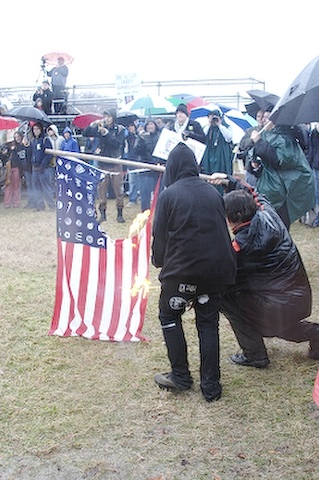
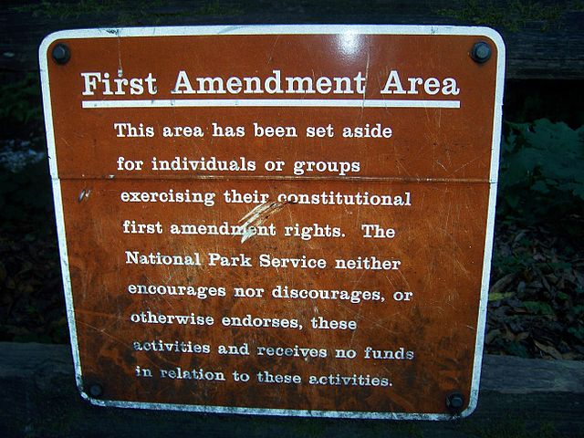
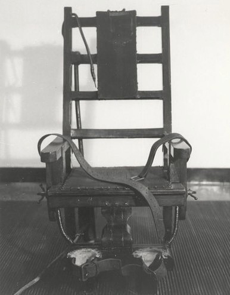

Civil Liberties
Dr. Christopher N. Lawrence
Middle Georgia State University
POLS 1101: American Government
🔇 Disable Narration
Civil Liberties versus Civil Rights
Both protected by the U.S. and state constitutions, but are subtly different:
Civil liberties are limitations on government interference in personal freedoms.
Civil rights are guarantees of equal or fair treatment by the government, regardless of one's personal characteristics.
Emphasis in United States is on individual rather than collective rights.
Rights Guaranteed in Original Text
Several protections of individual liberties were included in the original text of the Constitution:
Guarantee of right to habeas corpus.
Prohibition of ex post facto laws.
Prohibition of bills of attainder.
Selective Incorporation
Bill of Rights originally only applied to the national government: Barron v. Baltimore (1833).
14th Amendment, passed and ratified after the Civil War, states in part:
“No State shall make or enforce any law which shall abridge the privileges or immunities of citizens of the United States; nor shall any State deprive any person of life, liberty, or property, without due process of law; nor deny to any person within its jurisdiction the equal protection of the laws.”
Selective Incorporation
Due process clause used to “incorporate” parts of the Bill of Rights into the practices of the states.
Today most—but not all—of the Bill of Rights is incorporated.
Important exception: right to a jury trial in civil disputes (7th Amendment).
Freedom of Expression
The First Amendment: “Congress shall make no law… abridging the freedom of speech, or of the press; or the right of the people peaceably to assemble, and to petition the Government for a redress of grievances.”
Prior restraint is almost always unconstitutional.
Unpopular opinions historically less tolerated:
- Schenck v. United States (1917) and the “clear and present” danger doctrine.
- Brandenburg v. Ohio (1969): narrower “imminent lawless action” standard.
Symbolic Speech
Expression that is not printed or spoken also protected.
Clothing-as-protest
Black armbands as war protest—Tinker v. Des Moines Independent Community School District (1969)
“Fuck the Draft” jacket—Cohen v. California (1971)
Flag burning—Texas v. Johnson (1989)
Symbolic Speech
Exceptions:
Overriding governmental interest (burning draft cards: United States v. O'Brien, 1968).
As part of threat of violence (cross burning: Virginia v. Black, 2003).
“School speech” (“Bong Hits 4 Jesus” case: Morse v. Frederick, 2007).
Limits on Free Expression
Other limits on freedom of expression:
Restrictions on reasonable time, place, and manner of protests; must be “content-neutral”.
Commercial speech.
Campaign-related speech.
Libel (but higher standard for “public figures.”).
Obscenity and indecency.
Religious Liberties
Also embodied in the First Amendment: “Congress shall make no law respecting an establishment of religion, or prohibiting the free exercise thereof.”
Challenges:
Government assistance to activity by religious groups: how much is OK?
Balancing religious freedom with general obligations.
The Establishment Clause
Until 20th Century: seen as restriction on a particular state religion only.
Laws that promoted Christianity or monotheism were generally permitted.
More recently expanded to religion in general.
Dispute between separationist and accommodationist views.
The Lemon Test
Lemon v. Kurtzman (1971):
Laws must have a clear secular purpose.
Laws must not favor one religion over another, or religion over non-religion.
Laws must avoid excessive entanglement of public officials in religious affairs.
Coercion also considered in some, more recent cases.
Education and Establishment
Effort to draw a bright line—particularly in K–12 education (see U.S. Department of Education website for details):
Officials and employees cannot lead prayers.
Schools cannot facilitate “student led” prayer as part of the curriculum.
Student-initiated activity OK outside of structured curriculum.
Judges' rulings have been ignored in many parts of the country.
More entanglement accepted in higher education.
The Free Exercise Clause
Free exercise raises different issues:
What constitutes a “religion”?
What practices are important to a particular religion?
Conflict with other, legitimate goals of government.
The Sherbert-Yoder Test
Established in Sherbert v. Verner (1963) and Wisconsin v. Yoder (1972):
- Is there a sincere religious belief?
- Does the law create a substantial burden on acting on that belief?
- If so, law must:
- Serve a “compelling state interest.”
- Must pursue that interest by the “least restrictive means” (lowest possible burden on religion).
The “Peyote Case” and Free Exercise
Supreme Court decision in Employment Division v. Smith (1990) overturned the Sherbert-Yoder Test.
“Neutrality” standard: religious beliefs do not exempt people from following generally-applicable laws.
Sherbert-Yoder Test restored for federal laws by the Religious Freedom Restoration Act (RFRA) and the Religious Land Use and Institutionalized Persons Act (RLUIPA).
Some (but not all) states have also passed “mini-RFRAs.”
Right to Keep and Bear Arms
Second Amendment: “A well regulated militia being necessary to the security of a free state, the right of the people to keep and bear arms shall not be infringed.”
- Traditionally viewed as a collective right.
- Found to be an individual right in D.C. v. Heller (2008).
- Incorporated by McDonald v. Chicago (2010).
- Like other rights, subject to limitations.
The Right to Privacy
No explicit right to privacy in the Constitution.
Implied right found in Griswold v. Connecticut (1965).
Applied to abortion in Roe v. Wade (1973), although the Supreme Court has allowed numerous limitations over the past four decades.
Also: assisted suicide/euthanasia.
Privacy and Gay Rights
The Supreme Court's rulings on the right to have sex with someone of the same sex have evolved in recent decades:
Bowers v. Hardwick (1986) allowed Georgia to prosecute a man caught engaging in sex with another man.
Supreme Court reversed itself in Lawrence v. Texas (2003), a virtually identical case.
(We will discuss the issue of same-sex marriage along with civil rights.)
Property Rights
-
Due process clauses (5th and 14th amendments) limit taking life, liberty, or property.
Property may be taken for public use (eminent domain) if just compensation is paid.
Recent Supreme Court cases have restricted regulatory takings of property (government land-use regulation that diminishes property values).
Rights of the Criminally Accused
Much of the Bill of Rights deals with the rights of individuals suspected of criminal conduct:
4th Amendment: limits on search and seizure of evidence.
5th Amendment: right against self-incrimination; double jeopardy; due process clause.
6th Amendment: right to trial by jury and assistance of counsel.
8th Amendment: prohibition of cruel and unusual punishments.
Search and Seizure
General requirement for a warrant to search and seize evidence.
Obtaining a warrant requires probable cause to believe a crime was committed.
Exceptions: consent; places with limited or no “reasonable expectation of privacy” (open fields, plain view, motor vehicle).
The exclusionary rule: Mapp v. Ohio (1961).
Taking the Fifth
Miranda v. Arizona (1966): suspects must be informed of their rights before custodial interrogation.
Protection against self-incrimination.
Protection against double jeopardy (but limited).
Rights to Jury Trial and Counsel
Defendant has right to jury trial for any crime that risks “loss of liberty.”
Jury must be impartial and have a fair composition to the defendant.
Right to assistance of counsel, even if indigent: Gideon v. Wainwright (1963).
“Cruel and Unusual Punishments”
Painful forms of punishment and execution common around founding era.
Until 1930s, confessions extracted through torture were still accepted in some states.
Today, mostly controversy over application of the death penalty.
As of 2013, 18 states have abolished the death penalty (only applies to crime under state law).
Narrowing the Death Penalty
Modern debate centers on the application of the death penalty; while still legal in general, there are limits:
-
Atkins v. Virginia (2002) forbade execution of the mentally handicapped.
Roper v. Simmons (2005) forbade execution of those who were minors when they committed crimes.
Kennedy v. Louisiana (2008) forbade death penalty for crimes other than murder.
Copyright and License
The text and narration of these slides are an original, creative work, Copyright © 2000–15 Christopher N. Lawrence. You may freely use, modify, and redistribute this slideshow under the terms of the Creative Commons Attribution-Share Alike 4.0 International license. To view a copy of this license, visit http://creativecommons.org/licenses/by-sa/4.0/ or send a letter to Creative Commons, 444 Castro Street, Suite 900, Mountain View, California, 94041, USA.
Other elements of these slides are either in the public domain (either originally or due to lapse in copyright), are U.S. government works not subject to copyright, or were licensed under the Creative Commons Attribution-Share Alike license (or a less restrictive license, the Creative Commons Attribution license) by their original creator.
Works Consulted
The following sources were consulted or used in the production of one or more of these slideshows, in addition to various primary source materials generally cited in-place or otherwise obvious from context throughout; previous editions of these works may have also been used. Any errors or omissions remain the sole responsibility of the author.
- Barbour, Christine and Gerald C. Wright. 2012. Keeping the Republic: Power and Citizenship in American Politics, Brief 4th Edition. Washington: CQ Press.
- Coleman, John J., Kenneth M. Goldstein, and William G. Howell. 2012. Cause and Consequence in American Politics. New York: Longman Pearson.
- Fiorina, Morris P., Paul E. Peterson, Bertram D. Johnson, and William G. Mayer. 2011. America's New Democracy, 6th Edition. New York: Longman Pearson.
- O'Connor, Karen, Larry J. Sabato, and Alixandra B. Yanus. 2013. American Government: Roots and Reform, 12th Edition. New York: Pearson.
- Sidlow, Edward I. and Beth Henschen. 2013. GOVT, 4th Edition. New York: Cengage Learning.
- The American National Election Studies.
- Various Wikimedia projects, including the Wikimedia Commons, Wikipedia, and Wikisource.